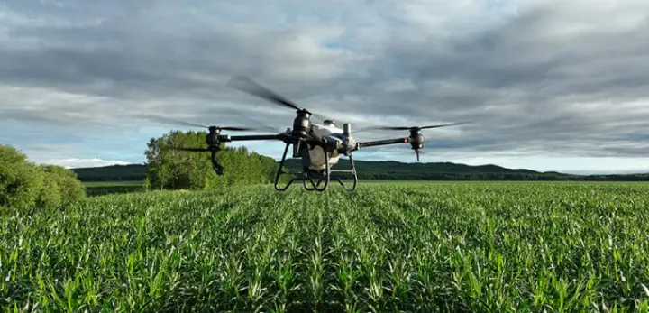
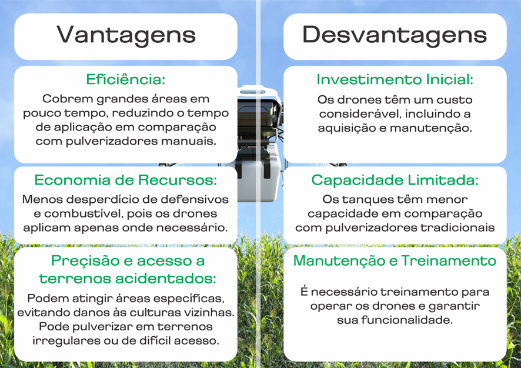

O drone agrícola é uma ferramenta promissora de pulverização e pode trazer benefícios imediatos, como tirar o aplicador de dentro da lavoura no momento da aplicação, principalmente o que usa o pulverizador costal; não causar amassamento da cultura; não depender das condições do solo para entrar na lavoura; utilizar menos água; não utilizar combustíveis fósseis; rapidez de aplicação em pequenas áreas; complementar a pulverização tratorizada e com o avião em áreas acidentadas, com obstáculos e em aplicação localizada, de acordo com mapas de aplicação, no contexto de agricultura de precisão.
O drone é um complemento importante à aplicação terrestre no cultivo de florestas. Ele consegue chegar em áreas onde o equipamento terrestre, às vezes, não consegue trabalhar, evitando que o produtor tenha altos custos com mão de obra para ir até estes locais de difícil acesso.
Aplicação de 100% da área; Permite o uso do drone para realizar a aplicação localizada; Viabilidade e barateamento da operação com drones; Uso da quantidade exata do produto;
